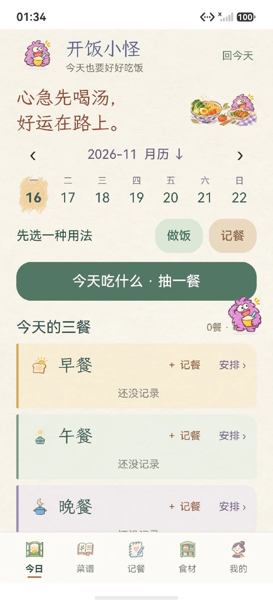

想吃的，总有做法。
在菜谱里找灵感，按时间、口味与预算筛选。跟着步骤，把喜欢变成端上桌的那一道。
翻翻菜谱一只小怪，陪你认真吃饭
从「今天吃什么」到「这顿真不错」。
找菜谱、管食材、记下每一餐，
让好好吃饭，成为一件轻松的小事。
Android & HarmonyOS
不必顿顿丰盛，
也要好好吃饭。
LITTLE MONSTER, EVERYDAY MAGIC
不需要一下子改变生活。
就从照顾好下一顿开始。
给选择困难的一点小惊喜
在应用里选好人数、时间和预算，
抽一餐，再按喜欢的搭配开始准备。
先在这里，抽一道灵感菜。
小小的灵感，只为这一餐
约 20 分钟 · 来自应用菜谱
A LITTLE LOOK INSIDE
柔软的蜡笔笔触，清楚的日常安排。
这是应用真实的样子。
HarmonyOS 应用界面 · 点击可查看大图

厨房里，多一个商量的伙伴
把做饭时的小疑问，交给 AI 小怪。
围绕菜谱、口味与本次条件，一起找找新思路。
云端 AI 需联网、登录及本次发送同意。建议仅作日常参考，
过敏原、食材新鲜度和熟度，记得自己再确认。
START SMALL, EAT WELL
先用本机功能，
再按需要开启云端服务。
先逛逛菜谱，看看今天想吃什么。喜欢的做法，随手收藏起来。
本机模式也能逛菜谱、管库存、记三餐。使用本机功能无需注册。
找一道喜欢的菜，或在应用里抽一餐。云端 AI 与同步按需、自愿开启。
GOOD FOOD, ALWAYS WITH YOU
按你的设备，选一个舒服的开始。
适用于 HarmonyOS 5 及以上设备。
在应用市场获取并管理更新。
适用于 Android 8.0 及以上设备。
从官网下载签名安装包。
下载后打开安装包，按系统提示允许本次安装。升级前请保留应用数据；若提示签名不一致，请先导出重要记录。
SHA-256
构建时生成苹果设备暂不提供安装。下载或跳转如被微信、QQ 拦截，请使用系统浏览器打开本页。
一点好奇，一点解答
关于吃饭，也关于安心使用。
你关心的，我们慢慢说。
先看看菜谱，或让小怪帮你抽一餐。在应用里选好人数、时间和预算，再从喜欢的搭配开始准备。少纠结一点，多期待一口。
可以。浏览本地菜谱、管理食材、安排三餐和记餐，都可以从本机模式开始。等你需要同步或 AI 问答时，再选择开启相应服务。
把食材、数量和保质期记进食库，留意临期食材，再整理缺少的食材到采购清单。做饭前先看看自己有什么，也是好好吃饭的一部分。
做法没看懂、想换一种搭配，或有口味上的小疑问，都可以和小怪商量。云端 AI 需联网、登录及本次发送同意；建议仅作参考，过敏原和食材熟度仍要自行确认。
不会因为记下一餐就自动公开。本机记录先保存在设备中，同步与照片上传由你选择。重要记录记得定期导出；卸载或清除应用数据可能使未导出的内容无法恢复。具体数据处理请查看应用内隐私政策。
写信到 maintainer-0c32@example.invalid。想提建议、反馈问题，或咨询隐私相关事项，都可以告诉我们。反馈问题时附上设备型号与操作步骤，记得先遮挡截图里的示例主体信息。
世界很大，先好好吃一顿饭。
和小怪一起，开饭吧 ↗